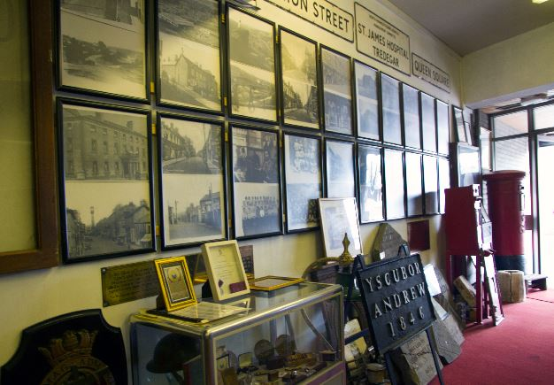

About
The Tredegar Museum
Tredegar Museum was founded in the 1970s by Tredegar Historical Society and the founder member Mr Oliver Jones, local Historian and author of The Early Days of Sirhowy and Tredegar. The museum is now managed by the Tredegar History and Archive Society.
Our CURATORS
The Tredegar Museum is staffed by a team of local volunteers who are at hand to show you around the Museum.
Amenities
We are fully accessible to wheelchair users
and have accessible toilets.
Be Part of Our Community
New members and visitors are always welcome at both the Museum and at our History and Archive society. Please pop in anytime to speak to one of our members in the Museum, or alternativy come along to one of our weekly meetings held upstaires in the Tredegar library at 2:00pm every Wednesday afternoon. You can also contact via phone on 01495 357869 or via e-mail here.
